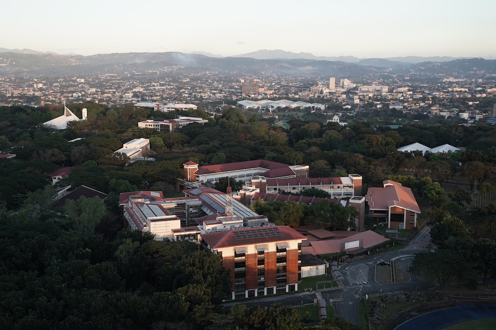

Ateneo de Manila University
Short History
Ateneo de Manila University was founded in 1859 by the Society of Jesus (Jesuits). Originally located in Intramuros, it began as the Escuela Municipal de Manila, and at the time, it was the only primary school in Manila. Before being renamed to Ateneo Municipal de Manila in 1865, additionally, in the same year, secondary education was added. When American colonial rule came in 1902, the Ateneo Municipal lost its government subsidy. In 1908, the government recognized it as a college licensed to offer the bachelor’s degree and certificates in various majors, an example of which is electrical engineering. In 1909, the Jesuits finally removed the word “Municipal” from Ateneo’s official name, and it has since been known as the Ateneo de Manila. American Jesuits took over administration in 1921. During WW2, a majority of Ateneo was destroyed, and only 1 structure remained, the statue of St. Joseph and the Child Jesus. After the war, the destroyed structures were salvaged. In 1952, the campus was rebuilt in Loyola Heights, now being the largest of the 4. Over time, 3 more campuses were built in the NCR.
Core Values
Ateneo’s education is built around Jesuit principles that shape its students into compassionate leaders and responsible citizens. Its core values include:
- Magis – Striving for excellence and doing more for others.
- Cura Personalis – Care for the whole person, recognizing individual dignity and growth.
- Ad Majorem Dei Gloriam (AMDG) – Doing all things for the greater glory of God.
- Men and Women for Others – A commitment to serve others and contribute to nation-building.
Popular Majors
Ateneo offers a wide variety of courses in liberal arts, business, and sciences. Here are some of its most popular and competitive programs:
| School | Programs | |
|---|---|---|
| Undergraduate | Graduate | |
| School of Humanities | AB Communication | MA Literature |
| School of Science and Engineering | BS Computer Science | MS Environmental Science |
| John Gokongwei School of Management | BS Management Engineering | MBA |
| School of Social Sciences | AB Political Science | MA Economics |
Campuses
Ateneo operates several campuses across Metro Manila:
- Loyola Heights Campus – The main campus, housing most undergraduate and graduate programs.
- Rockwell Campus – Home to the Ateneo Graduate School of Business.
- Salcedo Campus – Focused on continuing education and professional development.
- Pasig Campus – The Ateneo School of Medicine and Public Health.
Watch this short feature about Ateneo: